Porte-monnaie origami en bâche recyclée
Une bâche publicitaire qui partait à la benne, un patron, quelques plis : voilà un porte-monnaie solide, étanche et unique. Sans couture, sans colle.
- Très facile
- ≈ 30 minutes
- ≈ 5 CHF de matériel
- Dès 10 ans, accompagné·e
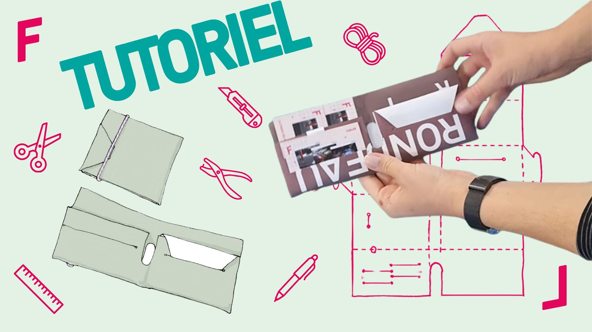
Le patron
Le gabarit tient sur une feuille A3. Pas d'imprimante A3 ? Prends la version en 4 feuilles A4 à assembler au scotch. Pour fabriquer en série, découpe le patron dans un matériau rigide (carton fort, PP, contreplaqué fin à la découpeuse laser) : il durera des centaines de tracés.
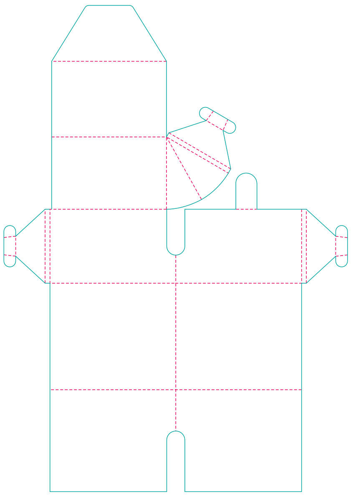
- Ligne de découpe (contour)
- Ligne de pliage
- Trous au poinçon, reliés : fente au cutter
Impression : dans la fenêtre d'impression, choisis « Taille réelle » ou « 100 % » et désactive « Ajuster à la page ». Vérifie ensuite l'échelle de 5 cm avec une règle avant de découper.
Le matériel
Tout se trouve dans un fablab, et presque tout dans un tiroir de cuisine. La bâche se récupère gratuitement auprès des imprimeries, des festivals ou des salles de concert après leurs événements.
- Bâche PVC récupéréeEnviron 35 × 50 cm, souple
- CiseauxPour le découpage grossier
- CutterPour les contours nets et les fentes
- Tapis de coupeOu un carton épais pour protéger la table
- PoinçonIdéalement à têtes interchangeables (3 diamètres)
- Ficelle élastiqueEnviron 30 cm, pour la fermeture
- Stylo ou feutre finPour tracer sur l'envers
- Règle et plioirPour des plis bien marqués
- Eau savonneuseEt un peu d'acétone (facultatif)
Pas à pas
Chaque étape a son illustration et un court extrait de la vidéo, qui tourne en boucle. Coche les étapes au fur et à mesure : ta progression reste enregistrée dans ce navigateur.
-
1
Choisir l'emplacement sur la bâche
Fais glisser le patron sur la bâche jusqu'à trouver le motif ou le mélange de couleurs qui te plaît. La bande centrale du patron (en violet sur l'illustration) est la zone qui restera visible une fois le porte-monnaie plié : c'est là qu'il faut placer la belle typo ou le joli dessin.
Pose le patron bien à plat et trace les contours, ainsi que les trous et les fentes intérieurs.
Fais attention à l'orientation du patron sur le recto ou le verso de la bâche. Trace de préférence sur l'envers (la face blanche) : c'est plus lisible et le trait ne se verra plus. Mais si tu traces à l'envers, retourne le patron, sinon le motif sera inversé.
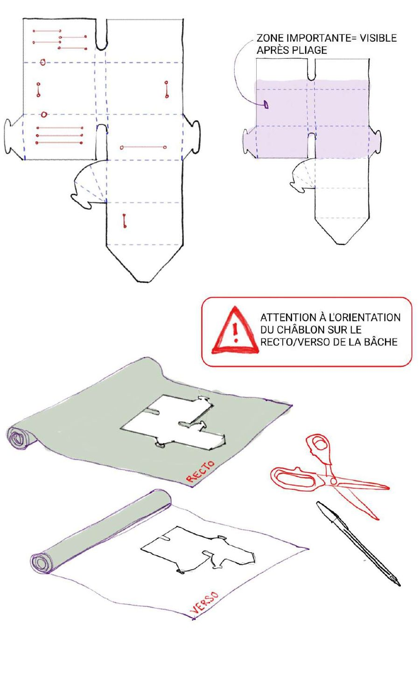
Zone visible et orientation recto/verso ExtraitTracer les contours -
2
Découper
Découpe d'abord grossièrement autour du tracé aux ciseaux, pour libérer la pièce du reste de la bâche. Repasse ensuite au cutter sur les traits, pour un contour net et précis. Finis les angles et les arrondis au cutter.
Protège la table avec un tapis de coupe ou un carton avant d'utiliser le cutter.
ExtraitDécoupe au cutter sur le tapis 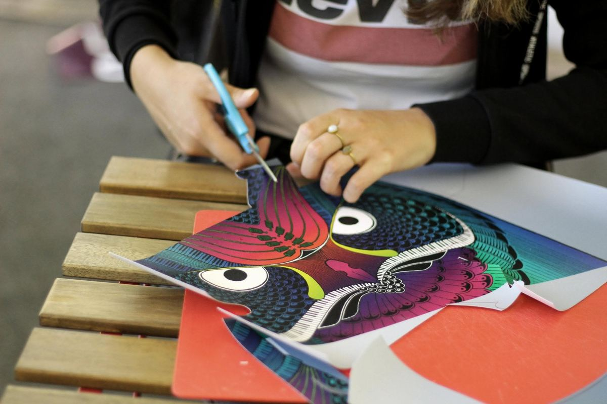
Le découpage grossier aux ciseaux -
3
Poinçonner et fendre
Perce tous les trous tracés à l'étape 1, avec le diamètre de poinçon adapté. Pour les deux trous indiqués sur le patron, destinés à la ficelle élastique, change de tête et prends le diamètre de la ficelle.
Quand deux trous sont reliés par un trait, découpe ce trait au cutter : cela forme les fentes où viendront se glisser les languettes et les cartes.
Commencer et finir chaque fente sur un trou évite que la bâche se déchire à l'usage.
Les repères bleu foncé du patron : un cercle = un trou, un trait entre deux cercles = une fente -
4
Laver
Les bâches ont souvent passé du temps dehors : lave la pièce à l'eau savonneuse et laisse-la sécher.
La face blanche peut aussi être nettoyée à l'acétone pour effacer les traits de stylo, mais jamais la face imprimée : elle perdrait son motif et ses couleurs.
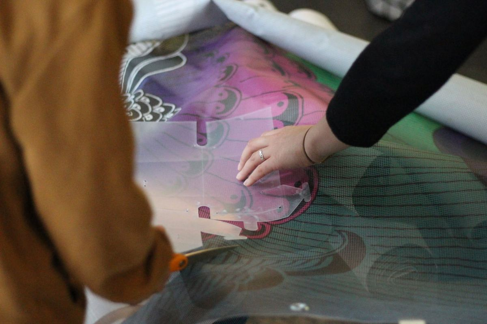
Gabarit transparent posé sur une bâche -
5
Plier la poche à monnaie
On commence par la pointe du patron. Les zones sont nommées A, B, C et D, de la pointe vers le centre.
- Marque tous les plis le long des pointillés.
- Replie la pointe A vers l'intérieur.
- Rabats B par-dessus, puis le tout sous C.
- Finis en accordéon sous D : la poche à monnaie est formée.
Les vues en coupe 1 à 4 (dans le cadre vert de l'illustration) montrent dans quel sens va chaque pli. Garde-les sous les yeux.
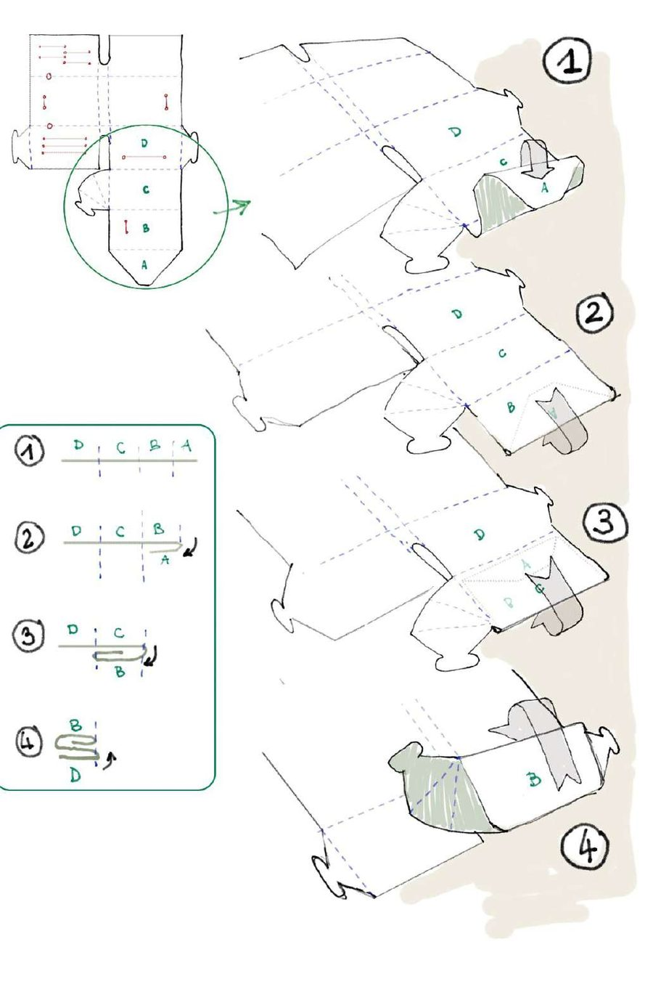
Pliage A → B → C → D ExtraitMarquer les plis ExtraitLe pli en diagonale -
6
Fermer le soufflet
Le côté de la poche a une partie en éventail, le soufflet. Plie-le le long de ses rayons (C, B, A, voir les coupes 1 à 3), puis rabats-le contre la poche.
Glisse ensuite la petite languette arrondie dans sa fente pour verrouiller le tout : pince-la, passe-la dans la fente, puis déplie-la de l'autre côté (encadré du bas de l'illustration).
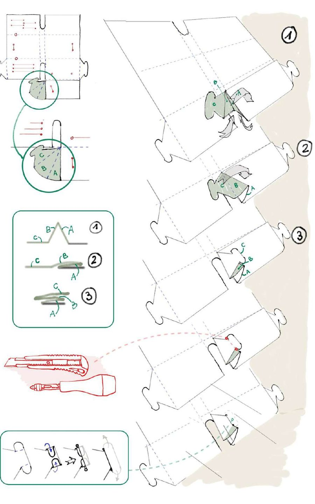
Soufflet en éventail et languette ExtraitRabattre le soufflet ExtraitVerrouiller la poche -
7
Nouer la ficelle élastique
Repère les deux trous de plus grand diamètre, prévus pour la ficelle. Mesure une longueur qui permet un aller-retour, plus une marge pour le nœud, puis coupe.
Passe la ficelle dans les trous, noue les deux extrémités côté blanc, puis coupe ce qui dépasse.
Un double nœud bien serré ne bouge plus. Une goutte de flamme sur les bouts d'une ficelle synthétique empêche qu'elle s'effiloche.
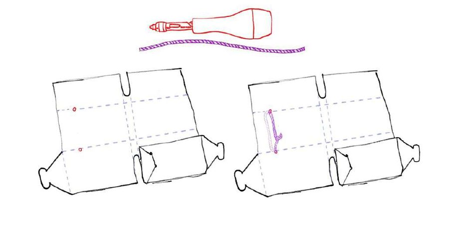
Passer la ficelle dans les deux trous ExtraitLa ficelle élastique -
8
Le pliage final
- Rabats la partie haute vers le bas, le long du pli horizontal (grandes flèches).
- Retourne le tout de 180°.
- Replie les deux languettes latérales vers l'intérieur et glisse-les dans leurs fentes.
- Retourne de nouveau de 180° : l'intérieur du porte-monnaie apparaît, avec la poche à monnaie à droite.
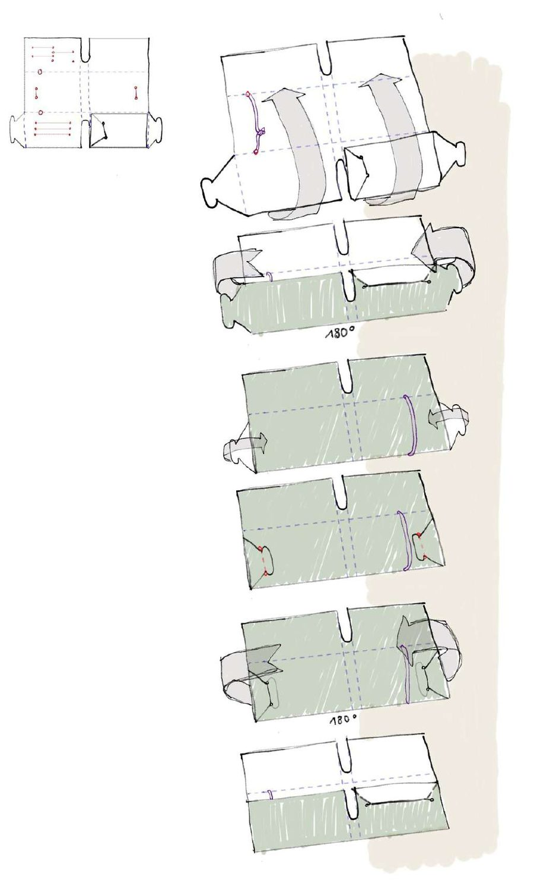
Rabats, retournements et languettes ExtraitRabattre la partie haute -
9
Finitions et cartes
Marque fermement le pli central à la règle ou au plioir, pour que le porte-monnaie se ferme bien à plat. Glisse tes cartes dans les fentes de gauche, la monnaie dans la poche à soufflet, et referme avec la ficelle élastique.
La bâche garde la mémoire des plis : plus tu l'utilises, plus il se ferme facilement.
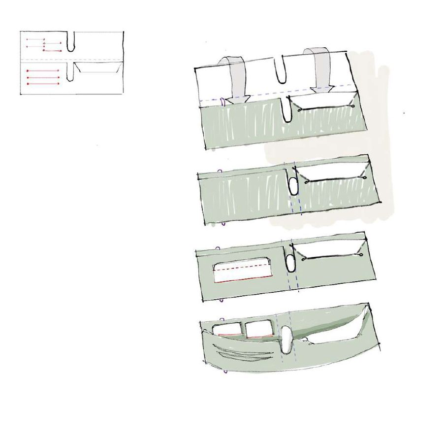
Fentes pour cartes et pli central ExtraitMarquer le pli central ExtraitEt voilà !
La vidéo complète
Tout le montage en un peu moins de 10 minutes. Clique sur un chapitre pour y aller directement.
La vidéo est hébergée sur YouTube (mode sans cookies) et ne se charge que lorsque tu cliques. Les extraits de cette page, eux, sont hébergés ici.
En atelier
Ce porte-monnaie est né au FabLab La Chaux-de-Fonds et se fabrique régulièrement en atelier, avec des enfants comme avec des adultes. Tu veux en organiser un, ou récupérer des chutes de bâche ? Passe nous voir.
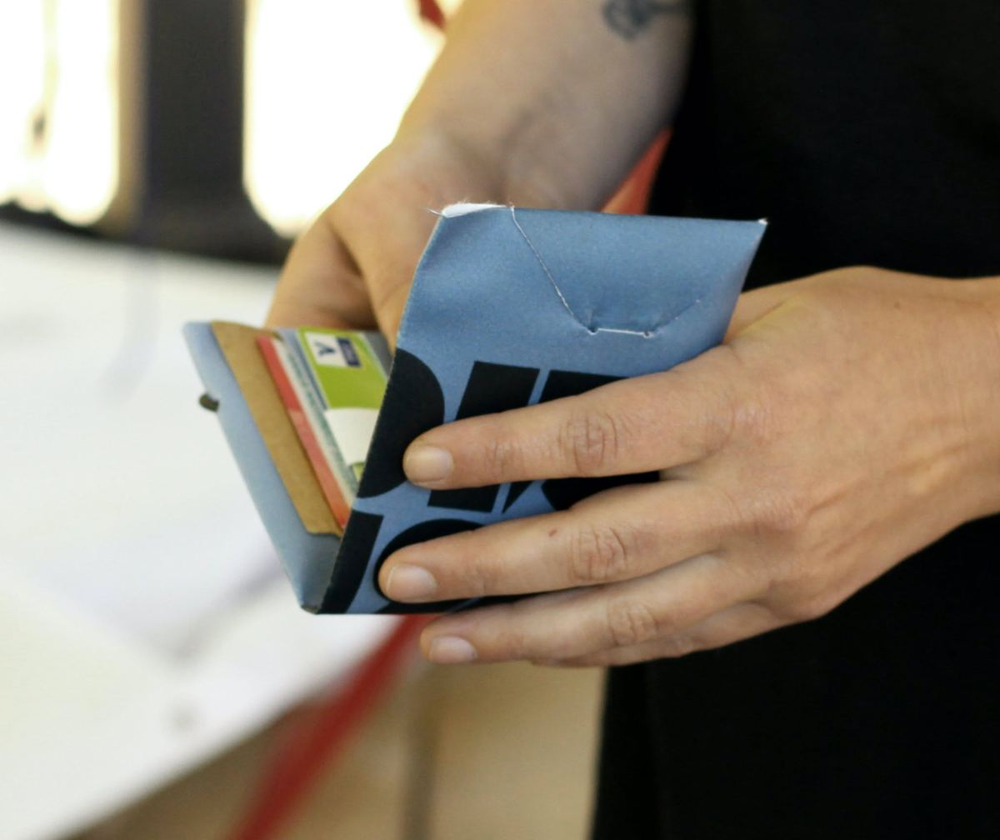
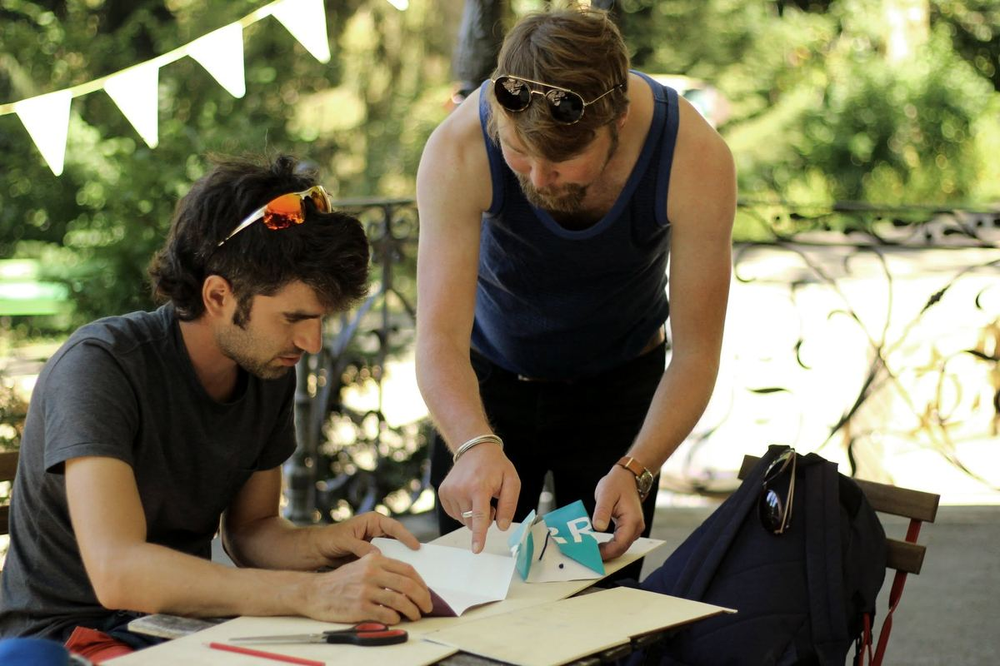
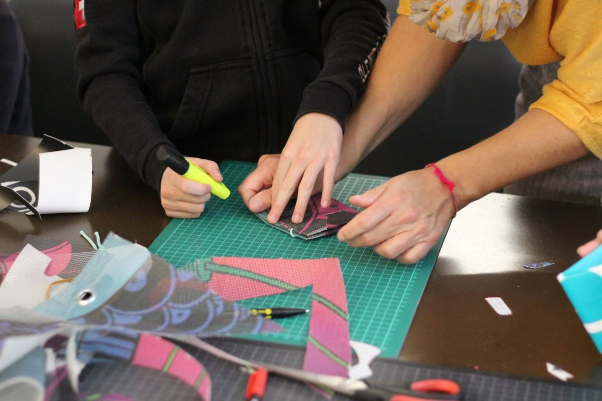